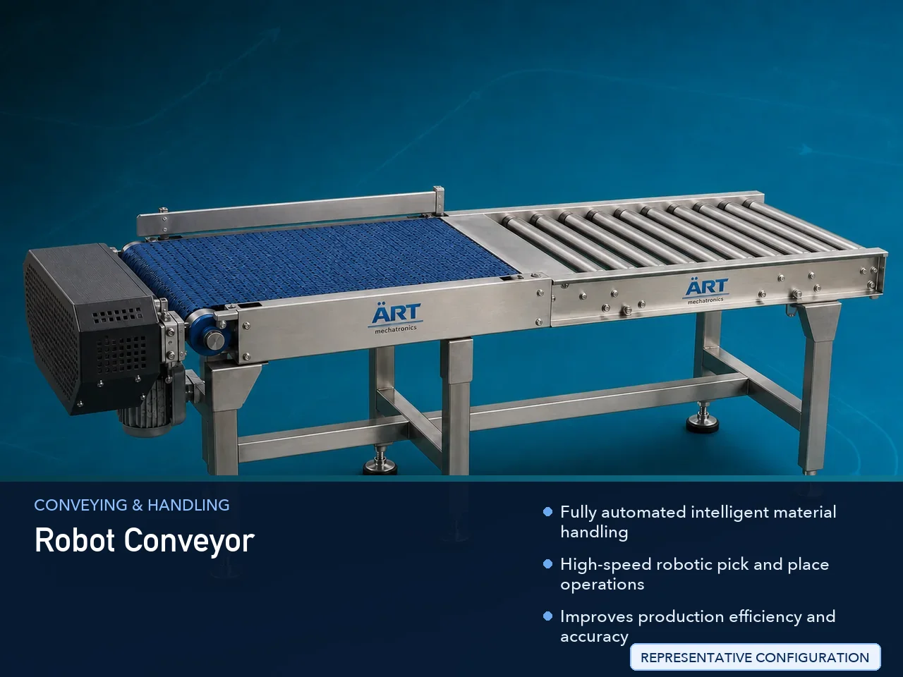

Robot Conveyor Machine (Industrial Robotic Material Handling & Automation System)
A Robot Conveyor Machine, also known as a Robotic Conveyor System or Industrial Robot Conveyor Automation System, is an advanced industrial automation solution designed for automatic conveying, pick and place operations, product handling, sorting, packaging, inspection, palletizing, and…

About the Robot Conveyor
Robot conveyor systems are widely used for: ✔ Automated material handling ✔ Pick and place operations ✔ Product sorting systems ✔ Packaging line automation ✔ Robotic palletizing ✔ Smart factory automation
The machine improves: ✔ Production efficiency ✔ Automation accuracy ✔ Labor reduction ✔ Product handling speed ✔ Operational safety ✔ Industrial productivity
The system combines: ✔ Conveyor systems ✔ Robotic arms ✔ Sensors and vision systems ✔ PLC and automation controls ✔ Intelligent product handling technology
to create fully automated production and packaging workflows.
Robot conveyor machines are widely used in industries such as:
Food processing industries
Packaging industries
Pharmaceutical industries
Automobile industries
E-commerce fulfillment centers
Manufacturing industries
Electronics industries
Warehousing & logistics
where high-speed automated product handling and smart production systems are essential.
The machine is highly suitable for: ✔ Pick and place automation ✔ Robotic sorting systems ✔ Packaging automation ✔ Conveyor line automation ✔ Product inspection systems ✔ Smart warehouse operations
ART Mechatronics offers high-performance robot conveyor machines, engineered for advanced industrial automation, continuous production operation, intelligent product handling, and reliable long-term performance.
Working Principle of Robot Conveyor Machine
Products or materials move continuously on conveyor system
Sensors or vision systems identify: ✔ Product position ✔ Shape ✔ Size ✔ Orientation ✔ Barcode or inspection details
Robotic arm performs: ✔ Pick and place ✔ Sorting ✔ Packaging ✔ Palletizing ✔ Inspection ✔ Product transfer automatically and accurately.
PLC automation synchronizes conveyor movement with robotic actions
Machine handles: ✔ Boxes ✔ Cartons ✔ Bottles ✔ Food products ✔ Industrial components ✔ Packages with high-speed automation.
Finished products automatically transferred to: Packaging stations Palletizing systems Storage systems Dispatch lines
Types of Robot Conveyor Machines
- 1. Pick & Place Robot Conveyor
Designed for: ✔ Automatic product picking and placement operations
- 2. Robotic Packaging Conveyor
Suitable for: ✔ Automated packaging line systems
- 3. Robotic Sorting Conveyor
Uses: ✔ Intelligent sorting and classification systems
- 4. Palletizing Robot Conveyor
Designed for: ✔ Automatic pallet stacking operations
- 5. Vision Guided Robot Conveyor
Suitable for: ✔ AI and camera-based product handling systems
- 6. Smart Factory Robot Conveyor
Designed for: ✔ Fully automated industrial production systems
Industries Using Robot Conveyor Machine
📦 Packaging Industry Automated packaging and product transfer systems 🍃 Food Processing Industry Food handling and robotic packaging systems 💊 Pharmaceutical Industry Medicine packaging and inspection automation systems 🚗 Automobile Industry Component handling and assembly line automation 🛒 E-Commerce Industry Parcel sorting and warehouse automation systems ⚙️ Manufacturing Industry Smart production line automation systems 💻 Electronics Industry Precision component handling systems 🚚 Warehousing & Logistics Intelligent material handling and dispatch systems
Features & Advantages
✔ Fully automated intelligent material handling ✔ High-speed robotic pick and place operations ✔ Improves production efficiency and accuracy ✔ Reduces manual labor and handling errors ✔ Continuous industrial operation ✔ Smart factory automation integration ✔ Advanced sensor and vision technology support ✔ Flexible robotic programming options ✔ Energy-efficient industrial automation solution
Technical Highlights
Conveyor Type: Belt conveyor Roller conveyor Slat conveyor Modular conveyor Robotic Integration: Pick and place robots Palletizing robots Delta robots Collaborative robots (Cobots) Control System: PLC automation HMI touchscreen controls Servo synchronization systems Sensor Technology: Vision systems Barcode scanners Proximity sensors Automation: Fully automatic robotic systems
Turnkey Robotic Conveyor Solutions
ART Mechatronics offers: Complete robotic conveyor automation systems Smart factory integration solutions Pick and place automation systems Packaging and palletizing automation Installation & commissioning After-sales service & AMC
Why Choose Art Mechatronics
Expertise in industrial automation and robotic systems Customized robotic conveyor solutions for multiple industries High-performance and reliable automation systems Advanced PLC and robotic integration capability Proven industrial automation performance across sectors
Applications
Packaging Facilities Food Processing Plants Pharmaceutical Manufacturing Units Automobile Industries E-Commerce Fulfillment Centers Smart Manufacturing Plants
Related Conveying & Handling machines
Get pricing & specs for the Robot Conveyor
Share the product, target capacity, current process and plant location. These details help our engineers discuss the right machine or line configuration.
One partner, from design to start-up
ART Mechatronics designs, manufactures, installs and commissions your Robot Conveyor solution with regional presence in India, UAE and Thailand.